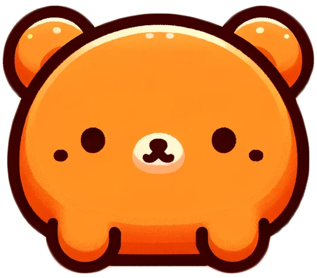

こんな確認漏れ、ありませんか？
?
このリンク、確認したっけ？
?
サンクスページにリダイレクトされる？
?
フォームの送信先は大丈夫だっけ？
更新が多いサイトほど、確認項目はどんどん増える…
わかる〜！毎回これで焦ってた

Playwrightで解決！
30項目以上を
手動でチェック
見落としのリスクあり
毎回時間がかかる…
→
Playwright
自動テスト！
確認漏れゼロ
毎回確実・楽！
Before
After
Playwright、最高すぎる！
自動でテストする内容
テストサーバー上で毎回チェックしていること
ページの表示確認
ボタンの遷移先
フォーム送信
サンクスページへのリダイレクト
メール内容の確認
…etc
全部自動でやってくれる！
仕組み化が大事！
人がチェックするとミスをすることがある
だから
仕組みで防ぐ
Playwrightで自動テスト環境を整えることで
確認漏れゼロ・作業効率アップを同時に実現！
仕組み化、大事だよね！
← 前へ
1 / 4
次へ →
このスライドを保存
全スライドを保存
← → キーでも切り替えられます
✕
📸 プロンプトにコピーして実行してください
python ...
クリックでコマンドをコピー | screenshots/ フォルダに保存されます